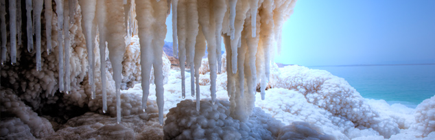

Jordan
Jordan is located in the Middle East and borders Syria, Saudi Arabia, the Red Sea, Palestine, Israel, and Iraq. Covering some 89,342 sq.km., it is located at 31 00 N, 36 00 E.
Jordan is a land steeped in history. It has been home to some of mankind's earliest settlements and villages, and relics of many of the world's great civilizations can still be seen today
Amman
A sprawling city spread over 19 hills, or "jebels," Amman is the modern - as well as the ancient - capital of the Hashemite Kingdom of Jordan.Known as Rabbath-Ammon during the Iron Age and later as Philadelphia, the ancient city that was once part of the Decapolis league, now boasts a population of around 2.3 million people.
Madaba

The trip south from Amman along the 5,000-year-old Kings Highway is one of the most memorable journeys in the Holy Land, passing through a string of ancient sites. The first city to encounter is Madaba, “the City of Mosaics." The city, best known for its spectacular Byzantine and Umayyad mosaics, is home to the famous
Petra
he ancient city of Petra is one of Jordan's national treasures and by far its best known tourist attraction. Located approximately three hours south of Amman, Petra is the legacy of the Nabataeans, an industrious Arab people who settled in southern Jordan more than 2,000 years ago.dmired then for its refined culture,
LEISURE & WELLNESS
The popularity of the spa vacation has increased worldwide as many people are adopting healthier lifestyles. For this reason, Jordan has complimented its natural therapeutic sites with first class resorts offering a diverse range of amenities. The goal is to provide its visitors with a unique and relaxing experience catering to all of their health and fitness and beauty needs.
Dead-Sea
At 410m below sea level, the Dead Sea is the lowest place on earth. Jordan’s Dead Sea coast is one of the most spectacular natural and spiritual landscapes in the world, and it remains as enticing to international visitors today as it was to kings, emperors, traders, and prophets in antiquity.
AEROSPORTS CLUB
The Royal Aero Sports Club was founded by His Majesty King Abdullah II in 1997. His Royal Highness Prince Hamzah Bin Al Hussein, an avid pilot and skydiver, is the President of the Club